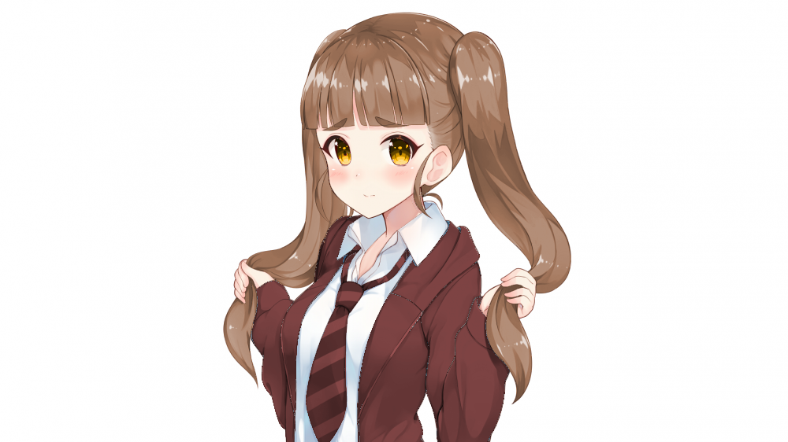

-
Her general appearance is inspired by this recolored image of Kamiya Nao from the anime
iDOLM@STER, though Rena's hair is a bit shorter. (Original
Image)
| Name | Calleni Rena |
|---|---|
| Nicknames | Rena-chi (by Calleni Nia and Amara Minori) |
| Characteristics | |
| Species | Human |
| Gender | Female |
| Handedness | Right |
| Birthday | 7:16:13 Pelio 14 (age 11–12) |
| Hometown | Siel, Clerèssia |
| Affiliations | |
| Occupation | Student |
| Current Affiliation(s) | Siel Middle School (Choir Club) |
| Family | Calleni Nia (older sister, deceased) unnamed parents |
| Appearance | |
| Height | 146 cm (4'9.5") |
| Weight | 51 kg (90 lb) |
| B/W/H | |
| Hair | Light brown: reaching her armpits, usu. worn in twintails |
| Eyes | Gold |
Though heartbroken by her older sister's death a year before the story's start, Rena's positive, optimistic outlook actually strengthened in the aftermath, leaving her as someone who has learned to appreciate the small things of life. She's extroverted and social, preferring to wear her heart on her sleeve rather than retreat inward.
As a member of her school's choir club, her beautiful, clear voice could make her a candidate for the group's center with practice. However, she's very self-conscious and embarrassed about her singing, so she much prefers to stay out of the spotlight.
Physically, Rena looks like a typical cute middle school girl. She wears her light brown hair in a pair of twintails down to her armpits, securing them with black hair ties, and her golden eyes stand out against her pale complexion.
Her middle school uniform features a white collared shirt underneath a maroon jacket and striped tie with a a mid-thigh-length black pleated skirt.
{kind=link}